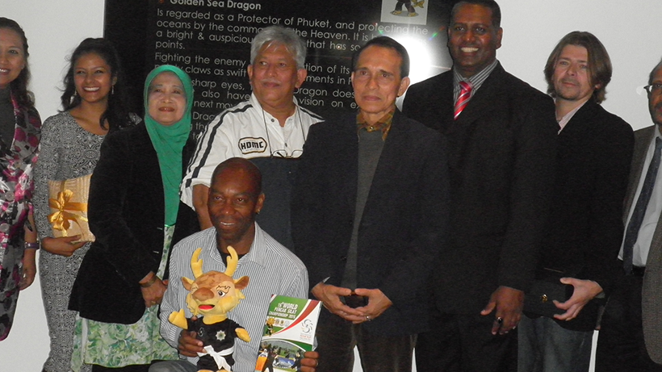

PERSILAT delegation visit to the UK

Background
Mr Sheik Alau'ddin Yacoob Marican and Dr Kasem Benchawong visited London, where the EPSF Secretariat is headquartered, to promote the upcoming World Pencak Silat Championships in Phuket, Thailand, in January 2015. Mr Sheik is the Consultant to the Pencak Silat Association of Thailand (PSAT) for the World Championship, he is also Chief Executive Officer of PERSISI and. Dr Kasem is on the Board of Marketing for PERSILAT and also Advisor to the President of PSAT, Senator (Mr) Panu Uthairat. Senator Panu was meant to come to London with Mr Sheik and Dr Kasem, but was at the last minute summoned to attend Parliamentary sessions in Bangkok hence having to cancel his trip. It was hoped that some representatives of EPSF member countries would be able to attend the presentation, but the short notice and expense meant none were able to join the event. The visit was funded by PSAT and the London hospitality was funded by PSF UK.
Report
From 24 to 29 September 2014, the European Pencak Silat Federation (EPSF) and the Pencak Silat Federation of UK (PSF UK) welcomed Dr Kasem Benchawong and Mr Sheik Alau'ddin Yacoob Marican, both of PERSILAT, to London for their visit to promote the 16th World Pencak Silat Championships taking place from 7th-17thJanuary, 2015 in Phuket, Thailand. Mr Sheikh is the official Consultant to PSAT for the World Pencak Silat Championships and also the CEO of Singapore Pencak Silat Federation (PERSISI). Dr Kasem is the Advisor to the President of PSAT and is on the Marketing Board of PERSILAT.
The visit was well received by the media, and coincided with a PERSILAT-endorsed National Wasit Juri (referees and officials) Training Course, the first held by EPSF. A programme was organised by EPSF in collaboration with PSF UK which included a TV interview, a press conference, presentations, filmings and press interviews.
Dr Kasem and Mr Sheik began their visit by giving a live TV interview on 24thSeptember to popular UK TV station, Islam Channel, about the coming World Championships in Phuket, Thailand and the development of Pencak Silat globally including in the UK and Europe. The interview was on the popular prime time programme 'Living the Life' broadcast worldwide on Islam Channel TV and streamed live on-line.
The focal point of the trip was a Press Conference at the British Film Institute in central London on Thursday 25 September, hosted by the President of the European Pencak Silat Federation, Mr Aidinal Alrashid. The conference featured a presentation on the upcoming World Championships, and a Q&A session with Dr Kasem, Mr Sheik and Mr Aidinal, about the World Championships and Pencak Silat in Europe and worldwide. Members of the press and the diplomatic corps were present, including the Muslim News, and the gathering was filmed by a local film crew from London Life.
During the conference, Dr Kasem told attendees about the strides that Silat has made in Thailand. He announced that 7 provinces now have Silat as part of the school curriculum, and all universities in Thailand now offer Silat classes to students. These advances made a strong case for why Thailand was awarded the privilege of hosting the World Championships, as well as an example of the lasting benefits they hope to generate. Also speaking was Mr Sheik, who outlined to attendees PERSILAT's vision of Silat one day being included in the Olympics, and explained the importance of promoting and expanding the reach and depth of Silat worldwide and especially in Europe.
Despite a busy schedule of interviews and promotional engagements, Dr Kasem and Mr Sheik took the time to attend a mini-tournament arranged by the PSF UK on Sunday 28 September. This mini-tournament was the final stage of a PERSILAT endorsed National Wasit Juri course to train new tournament referees and officials in the latest rules and regulations, a crucial step in developing the UK’s tournament infrastructure and capabilities. The course was led by Mr Shafaq Ali Haq from Singapore on behalf of the world governing body, PERSILAT.
Mr Sheik and Dr Kasem joined the tournament guests of honour alongside Mr Aidinal Alrashid, Mr Yudho P. Asruchin, Third Secretary (Information and Socio-Cultural Affairs) of the Indonesian Embassy in London and Mr M Hadrizammi Mustafa, First Secretary (Politics) of the Malaysian High Commission. Along with other attendees, including a team from Metro TV Indonesia, Antara News Agency, local press, and the general public, they enjoyed a full line-up of competitive sports and artistic Silat.
Prior to the tournament, Mr Sheik gave a presentation to the audience about what to expect in Phuket. He told the audience the upcoming World Championships would be the biggest yet, with over 50 nations represented. He also said how pleased he was to see UK-based fighters in action, and hoped to see them again in Thailand.
After awarding the competitors their medals, and the newly qualified referees and officials their National Level certificates, Dr Kasem and Mr Sheik thanked Mr Aidinal Alrashid, President of the EPSF and the PSF UK, for the support and hospitality he had received during the visit.
Mr Sheik received the loudest applause after he declared that being part of Pencak Silat was like being part of an enormous family, and the hospitality offered by the EPSF and PSF UK was so warm, it was hard for him to leave!
You can download a PDF version of this report here